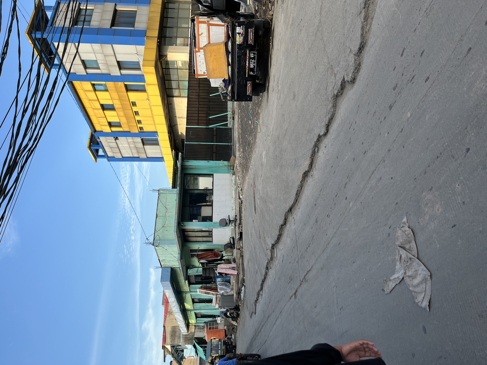
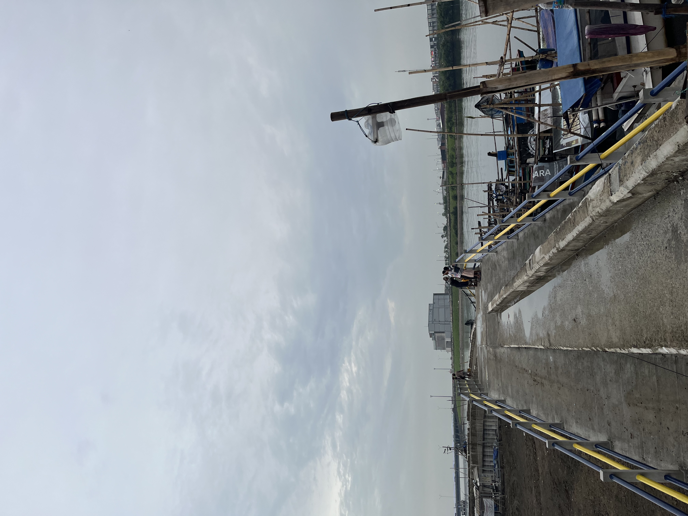
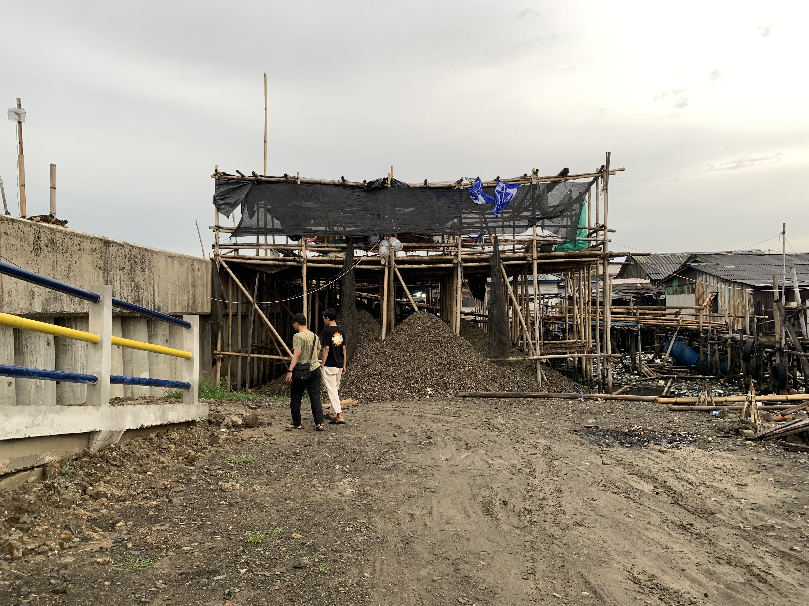
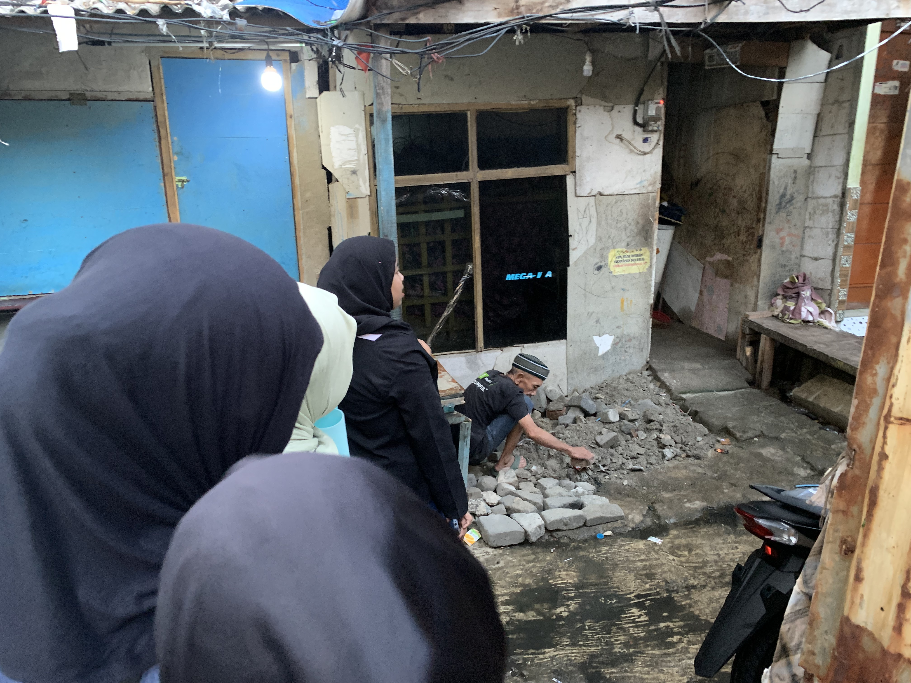

The Sinking City
Jakarta sits on an alluvial plain at the mouths of 13 rivers, home to more than 11 million people and 1.6 million buildings. Decades of groundwater extraction have set the city on a path that no flood infrastructure can fully reverse: the land itself is sinking.
Satellite radar measurements from 2016 to 2024 show that subsidence is not distributed uniformly. The map reveals where the ground is dropping fastest, on average, in 2024.
1,651,218 building footprints mapped across Jakarta (OpenStreetMap)
To understand who is most vulnerable, the team built a flood risk model combining hazard and vulnerability variables in Jakarta.
How I built this
Data pipeline: satellite data acquisition (Sentinel-1 SAR, 2016–2024), time series processing via LiCSBAS2, ground-truth validation against GNSS measurements, and interpolation (kriging in QGIS).
Paper and GitHub repository forthcoming.
What the Algorithm Sees
Zooming into North Jakarta, every kecamatan (subdistrict) carries a composite flood risk score derived from two inputs: how frequent and deep the flooding is and how socially vulnerable the kecamatan is.
The colors represent that combined variables. Inheriting scores from each kecamatan, the reddest buildings face the highest convergence of hazard and vulnerability.
One limitation is visible in the coloring itself: flood-related metrics were computed at the kecamatan level, producing the blocky, uniform patterns across the map. Buildings within the same kecamatan share the same hazard and vulnerability values, masking the variation that exists between buildings. If only building-level data existed, this variation could be captured more precisely.
Filling the Data Gap
Jakarta's building data has significant gaps in physical characteristics, such as construction materials, building use, and height. This information is essential for physical vulnerability analysis, which feeds directly into risk modeling. At scale, it could help policymakers prioritize interventions and reduce risk where it is needed most.
To fill this gap, the research team applied three vision-language models to predict building typologies from Google Street View imagery in Kecamatan Penjaringan, North Jakarta. From 63,729 raw Street View images, quality filtering narrowed the set to 29,937 buildings that received predictions.
But coverage was uneven, even within Penjaringan. The model could only predict buildings on streets wide enough for the Street View vehicle to reach. When we zoom into two neighborhoods, the unevenness sharpens.
How I built this
End-to-end ML classification pipeline: data acquisition via the Google Street View API (63,729 images), multi-stage data validation (error filtering, spatial buffer, LLaVA-NeXT quality screening), prompt engineering across four strategies, and multi-model evaluation using three vision-language models (Gemini 2.0 Flash, GPT-4o, Claude 3.5 Sonnet). Built in Python.
Paper and GitHub repository forthcoming.
Accuracy assessment is described in the methods section below.
The Gap
Our study areas comprised two neighborhoods in Penjaringan, North Jakarta. Both are fishing villages. Both sit on sinking ground. And yet, the algorithm revealed very different results.
RW 04 Kamal Muara
43.9% of buildings unpredicted
535 buildings, 235 with no prediction
RW 22 Muara Angke
84.3% of buildings unpredicted
728 buildings, 614 with no prediction
Land Tenure, Not Street Width
The gap is not a random technical limitation. RW 04's wider streets reflect a history of land formalization that made road construction and infrastructure upgrades possible. Street View vehicles could drive in. Our models could see.
RW 22's density tells a different story. Many residents were displaced from other parts of North Jakarta years, and in some cases decades, ago. They resettled on land whose legal status remained largely unresolved at the time of the research. Without formal tenure, government infrastructure rarely follows. Alleys stay narrow. The camera never comes. Structural inequality becomes one of the algorithm's blind spots.
Even with RW 04's higher Street View coverage, the algorithm can only go so far. It cannot access the material realities of community life: which places people return to, how they relate to one another, and how they live with flooding.
Fortunately, this limitation was anticipated. In parallel, the research design included direct engagement with communities to address it.
The Other Way
Same place. Different way of seeing.
While the modeling work mapped risk from above, a parallel ethnographic study handed cameras to 15 young people aged 18 to 25 in RW 04, Kamal Muara and RW 22, Muara Angke and asked them to photograph the places that matter to them. What they captured is not what any satellite or Street View vehicle could see.
Life in the Kampung
Joy and Play

"We call this location a waterfall because the currents from the two areas collide, resulting in a strong current. Many children swim and play in this location, one of the exciting places and enjoy fate because of the continuous flooding."
Where flood models see hazard, some of the youth of Muara Angke see a recreational opportunity. They renamed this drainage overflow "Curug Eceng," the waterfall. Down the road, a flooded alleyway becomes "Waterboom Gang 1," borrowing the name of commercial water parks. They find joy even in the harshest situations; a unique form of resilience.

"We swim to PIK a lot. Sometimes we get chased by security, but we're used to it. We always make it back."
PIK is the gated luxury development visible across the water from Kamal Muara. Swimming there is recreation, but it is also a small act of negotiating a boundary.
Care and Empathy

"Now that the shelling area is higher [following the seawall construction], they have to walk farther and climb more. It is tiring for them."
The seawall was built for protection. But for the elderly women who peel mussels for a living, it made their daily commute steeper and longer. Resilience infrastructure does not land equally on everyone.

"This is why I stay. I don't want to leave her."
Resilience in the kampung is relational and intergenerational. One young person stays not because the flooding is manageable, but because leaving means leaving family behind.
Spatial Exclusion
"They build without asking. They just come. We adapt later."
Government infrastructure arrives with improper implementation. Seawalls, roads, and reclamation projects reshape the landscape around the kampung while the people inside it adjust as best they can. The construction offered no choice for them but to adapt.
Quotes and photographs from Darmawan et al. (2025).
Both Ways of Seeing
Pull back to the city scale, and both layers are visible at once: the risk scores that algorithms compute and the lives that people actually lead in those same buildings.
Neither view is complete on its own. The flood model tells us which areas face the highest risk. The ethnography tells us that hazard is not the whole story; that resilience is woven into relationships, humor, daily routines, and the stubborn act of staying.
When both ways of seeing work together, something else becomes possible: risk assessments that account for what people value, not just what they stand to lose; infrastructure that serves the people it surrounds; and resilience building that begins by listening.
How I built this
This page serves 1.65 million building footprints as vector tiles (PMTiles generated via tippecanoe), with scroll-driven chapter transitions (Scrollama) and responsive map rendering (MapLibre GL JS). The frontend is vanilla HTML, CSS, and JavaScript, deployed as a static site. Explore the full technical details in the Methods section below.